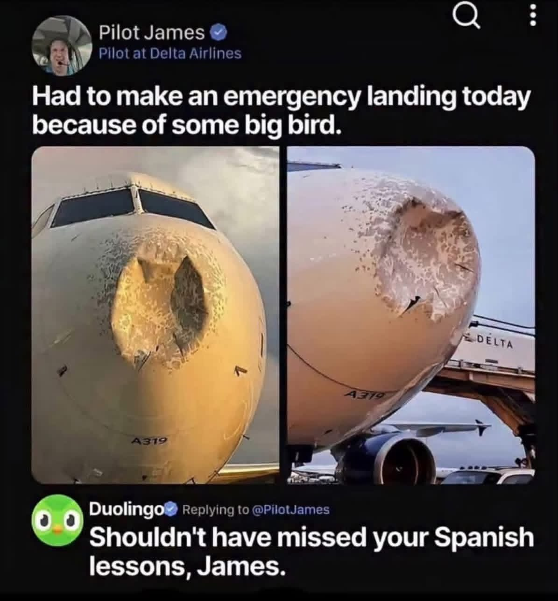

듀오링고: 그러니까 스페인어 수업을 까먹지 말았어야지^^

듀오링고: 그러니까 스페인어 수업을 까먹지 말았어야지^^
앵그리버드냐고
인도영어 같은건가
대체 뭐랑 부딪힌 걸까 펠리컨 같은 건가
엔진 아니니까 비행은 가능했겠네
스패니쉬랑 무슨 상관이야??
조종사가 스페인어 공부 하고 있었나 뷰지
듀오링고 캐릭터가 새잖아. 수업째고 가니까 듀오링고가 가서 한대 쥐어박았다란 농담이야.
아 통쾌하다
오 ㄱㅅㄱㅅ근데 왜 하필 스페니쉬야??
영어권은 스패니쉬 많이 하고 배우고 쓸모도 많아서
?
영미권 국가에서는 스페인어가 국룰 제2외국어임. 아무래도 미국에는 히스패닉계 인종도 많고 영국은 애초에 가까운 나라고
무게 때문인가 찢어진 부위 보면 철판 생각보다 많이 얇네
알바트로스랑 박았나
ㅋㅋㅋㅋㅋㅋㅋㅋㅋㅋㅋㅋㅋ